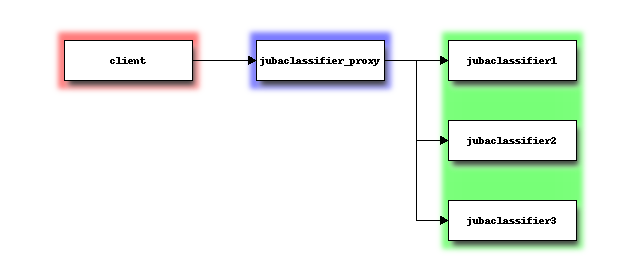

Architecture¶
Jubatus has a client-server architecture. The simplest process configuration is single client process and single server process like following figure.

Jubatus can make use of multiple server processes in order to scale out the system. By throwing queries to Jubatus Proxy, we can execute machine learning requests (update/analyze) with multiple server processes.
Jubatus Proxy proxy queries from clients to appropriate server(s). Clients work as if it is communicating with just one server. In other words, clients don’t need to know whether it is connecting to a server or a Jubatus Proxy.
Jubatus Proxy use ZooKeeper to keep-aliving and load-balancing each Jubatus servers.

Sometimes we want to distribute clients because data size is huge, or source of data is far from server. Jubatus can achieve this by creating multiple Jubatus Proxy and assigning different Jubatu Proxy to each client.

The following picture describes how to run programs used by management process. Please note that “semimaster”, “jubatusctrl” and “jubatus_classifier_server” is now called as “jubaclassifier_proxy”, “jubactl” and “jubaclassifier”, respectively.
{kind=link}